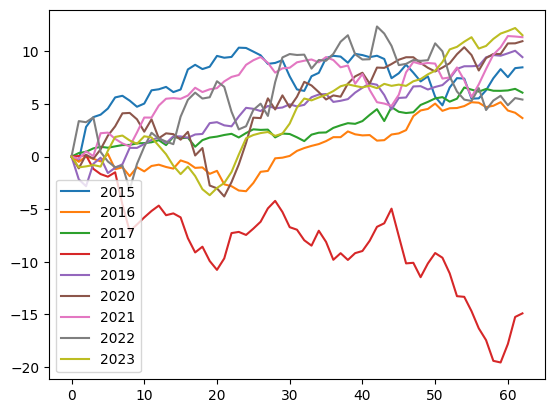
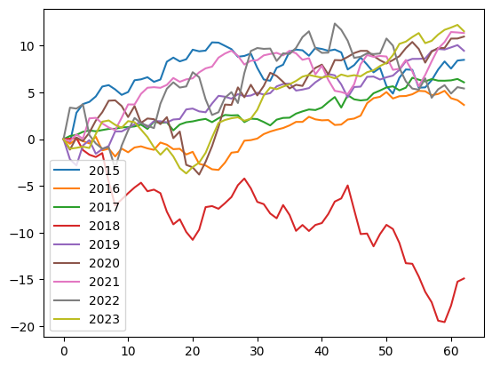

Macy’s stock seasonality¶
Background¶
I noticed that in the last few years, Macy’s stock has been growing around the Thanksgiving season, which aligns with makes sense, since that’s where Americans buy their presents. I wanted to do a little more math than just eye-balling the chart. Below is an export from Jupyter Notebook that I used to analyze daily stock prices for Macy’s in the range from October to December from 2015 to 2023.
Imports & Constants¶
import pandas
import matplotlib.pyplot as plt
# Inclusive range for dicing
YEARS = (2015, 2023)
MONTHS = (10, 12)
Download S&P 500 stock prices history as a CSV and parse the date¶
# https://www.nasdaq.com/market-activity/index/spx/historical?page=102&rows_per_page=25&timeline=y10
spx = pandas.read_csv('60-SPX.csv')
spx = spx.reindex(index=spx.index[::-1])
spx = spx.reset_index(drop=True)
del spx['Open']
del spx['Close/Last']
spx['Year'] = spx['Date'].str.split('/', expand=True)[2].astype(int)
spx['Month'] = spx['Date'].str.split('/', expand=True)[0].astype(int)
spx['Day'] = spx['Date'].str.split('/', expand=True)[1].astype(int)
spx
| Date | High | Low | Year | Month | Day | |
|---|---|---|---|---|---|---|
| 0 | 08/26/2014 | 2005.04 | 1998.59 | 2014 | 8 | 26 |
| 1 | 08/27/2014 | 2002.14 | 1996.20 | 2014 | 8 | 27 |
| 2 | 08/28/2014 | 1998.55 | 1990.52 | 2014 | 8 | 28 |
| 3 | 08/29/2014 | 2003.38 | 1994.65 | 2014 | 8 | 29 |
| 4 | 09/01/2014 | 0.00 | 0.00 | 2014 | 9 | 1 |
| ... | ... | ... | ... | ... | ... | ... |
| 2523 | 08/19/2024 | 5608.30 | 5550.74 | 2024 | 8 | 19 |
| 2524 | 08/20/2024 | 5620.51 | 5585.50 | 2024 | 8 | 20 |
| 2525 | 08/21/2024 | 5632.68 | 5591.57 | 2024 | 8 | 21 |
| 2526 | 08/22/2024 | 5643.22 | 5560.95 | 2024 | 8 | 22 |
| 2527 | 08/23/2024 | 5641.82 | 5585.16 | 2024 | 8 | 23 |
2528 rows × 6 columns
Download the target stock (M) prices history and parse the date¶
# https://finance.yahoo.com/quote/M/history/
prices = pandas.read_csv('60-M.csv')
del prices['Open']
del prices['Close']
del prices['Adj Close']
del prices['Volume']
prices['Year'] = prices['Date'].str.split('-', expand=True)[0].astype(int)
prices['Month'] = prices['Date'].str.split('-', expand=True)[1].astype(int)
prices['Day'] = prices['Date'].str.split('-', expand=True)[2].astype(int)
Merge the two datasets using date¶
Discard any rows with incomplete data
df = pandas.merge(spx, prices, on=['Year', 'Month', 'Day'], how='inner', suffixes=('Spx', 'Stock'))
df = df[(YEARS[0] <= df.Year) & (df.Year <= YEARS[1]) & (MONTHS[0] <= df.Month) & (df.Month <= MONTHS[1])]
df['didx'] = [
d
for year in range(YEARS[0], YEARS[1] + 1)
for d in range((df.Year == year).sum())
]
df.describe()
| HighSpx | LowSpx | Year | Month | Day | HighStock | LowStock | didx | |
|---|---|---|---|---|---|---|---|---|
| count | 571.000000 | 571.000000 | 571.000000 | 571.000000 | 571.000000 | 571.000000 | 571.000000 | 571.000000 |
| mean | 3249.744991 | 3215.057180 | 2018.998249 | 10.984238 | 15.562172 | 25.290193 | 24.382172 | 31.224168 |
| std | 899.323476 | 888.901796 | 2.582328 | 0.821699 | 8.823070 | 11.689632 | 11.410891 | 18.331992 |
| min | 1927.210000 | 1893.700000 | 2015.000000 | 10.000000 | 1.000000 | 5.990000 | 5.570000 | 0.000000 |
| 25% | 2556.490000 | 2543.895000 | 2017.000000 | 10.000000 | 8.000000 | 15.915000 | 15.395000 | 15.000000 |
| 50% | 3098.200000 | 3083.260000 | 2019.000000 | 11.000000 | 15.000000 | 23.059999 | 22.040001 | 31.000000 |
| 75% | 3981.490000 | 3935.905000 | 2021.000000 | 12.000000 | 23.000000 | 35.070002 | 33.399999 | 47.000000 |
| max | 4808.930000 | 4780.980000 | 2023.000000 | 12.000000 | 31.000000 | 52.480000 | 51.209999 | 63.000000 |
Square up the data¶
We want to plot several years on the same chart, so let’s trim the excess. For all the covered years find the smallest last day index.
years = list(range(min(df.Year), max(df.Year) + 1))
max_didx = min(max(df[df.Year==year].didx) for year in years)
min_didx = max(min(df[df.Year==year].didx) for year in years)
didxs = list(range(min_didx, max_didx + 1))
Plot¶
The stock price deviations for the selected months range over the selected years.
The S&P index price for the same dates.
Stock price corrected to S&P index.
Note that we plot percentage changes of the stock from the first day of the season. On day one all prices are at 0%, and then for each year they deviate.
def convert_to_season(df, y, years, didxs):
base = dict(zip(df.Year[df.didx==0], y[df.didx==0]))
return pandas.DataFrame(
[
[
(y[(df.Year==year) & (df.didx==didx)].iloc[0] - base[year]) * 100 / base[year]
for year in years
]
for didx in didxs
],
columns=map(str, years)
)
stock_seasons = convert_to_season(df, df.LowStock, years, didxs)
spx_seasons = convert_to_season(df, df.LowSpx, years, didxs)
stock_seasons.plot()
spx_seasons.plot()
(stock_seasons - spx_seasons).plot();
 


Download the M prices history with 1-minute precision¶
# https://lime.co/market-data-source/#i5z6wk
prices = pandas.read_csv('60-M-1m.csv', delimiter=';')
for column in ('ticker', 'open', 'high', 'low', 'volume'):
del prices[column]
prices['Year'] = prices['date'].str.split('/', expand=True)[2].astype(int)
prices['Month'] = prices['date'].str.split('/', expand=True)[0].astype(int)
prices['Day'] = prices['date'].str.split('/', expand=True)[1].astype(int)
prices['Hour'] = prices['time'].str.split(':', expand=True)[0].astype(int)
prices['Minute'] = prices['time'].str.split(':', expand=True)[1].astype(int)
prices
| date | time | close | Year | Month | Day | Hour | Minute | |
|---|---|---|---|---|---|---|---|---|
| 0 | 7/1/2024 | 6:30:00 AM | 19.100 | 2024 | 7 | 1 | 6 | 30 |
| 1 | 7/1/2024 | 6:31:00 AM | 19.030 | 2024 | 7 | 1 | 6 | 31 |
| 2 | 7/1/2024 | 6:32:00 AM | 19.050 | 2024 | 7 | 1 | 6 | 32 |
| 3 | 7/1/2024 | 6:33:00 AM | 19.065 | 2024 | 7 | 1 | 6 | 33 |
| 4 | 7/1/2024 | 6:34:00 AM | 19.020 | 2024 | 7 | 1 | 6 | 34 |
| ... | ... | ... | ... | ... | ... | ... | ... | ... |
| 31726 | 10/24/2024 | 12:55:00 PM | 15.430 | 2024 | 10 | 24 | 12 | 55 |
| 31727 | 10/24/2024 | 12:56:00 PM | 15.450 | 2024 | 10 | 24 | 12 | 56 |
| 31728 | 10/24/2024 | 12:57:00 PM | 15.445 | 2024 | 10 | 24 | 12 | 57 |
| 31729 | 10/24/2024 | 12:58:00 PM | 15.445 | 2024 | 10 | 24 | 12 | 58 |
| 31730 | 10/24/2024 | 12:59:00 PM | 15.410 | 2024 | 10 | 24 | 12 | 59 |
31731 rows × 8 columns
Hypothesis 1¶
When Macy’s stock spikes in the morning by at least 20c, it slides down in the evening by at least 10c.
def analyze_day(date: str, df: list[float]) -> tuple:
open_price = df[(df.Hour==6) & (df.Minute==30)].close.iloc[0]
morning_spike = max(df[df.Hour <= 6].close)
day_decline = min(df[(df.Hour >= 8) & (df.Hour <= 11)].close)
return open_price, morning_spike, day_decline, (morning_spike - open_price), (morning_spike - day_decline)
data = []
for date in set(prices['date']):
data.append([date, *analyze_day(date, prices[prices.date == date])])
# Spike-decline
sd = pandas.DataFrame(data, columns=('date', 'open_price', 'morning_spike', 'day_decline', 'spike', 'decline'))
len(sd[(sd.spike > 0.2)]), len(sd[(sd.spike > 0.2) & (sd.decline > 0.1)])
(14, 9)
sd[(sd.spike > 0.2) & (sd.decline > 0.1)][:5]
| date | open_price | morning_spike | day_decline | spike | decline | |
|---|---|---|---|---|---|---|
| 4 | 9/13/2024 | 14.760 | 15.160 | 14.8347 | 0.400 | 0.3253 |
| 7 | 8/6/2024 | 15.224 | 15.485 | 15.3800 | 0.261 | 0.1050 |
| 8 | 7/11/2024 | 19.130 | 19.470 | 19.2900 | 0.340 | 0.1800 |
| 17 | 7/5/2024 | 19.420 | 19.900 | 19.4800 | 0.480 | 0.4200 |
| 34 | 7/3/2024 | 17.940 | 18.180 | 17.9250 | 0.240 | 0.2550 |
import matplotlib.pyplot as plt
positive_days = sd[(sd.spike > 0.2) & (sd.decline > 0.1)]
negative_days = sd[(sd.spike > 0.2) & (sd.decline <= 0.1)]
def plot_samples(days, prices, count=5):
fig, axes = plt.subplots(nrows=count, ncols=1, figsize=(10, 10))
for i in range(count):
day = days.iloc[i]
date = day.date
prices[prices.date == date].close.plot(ax=axes[i])
axes[i].axhline(y=day.morning_spike, color='red', linestyle='--')
axes[i].axhline(y=day.day_decline, color='green', linestyle='--')
plot_samples(positive_days, prices)

plot_samples(negative_days, prices)
Hypothesis 2¶
If you sell at high point before 11 AM, you can buy back by the end of day at least 10c lower price.
def analyze_day(date: str, df: list[float]) -> tuple:
prices = list(df.close)
open_price = prices[0]
high_price = max(df[df.Hour <= 8].close)
close_price = prices[-1]
open_delta = high_price - open_price
close_delta = high_price - close_price
day_delta = close_price - open_price
return [high_price - close_price, close_price - open_price]
data = []
for date in set(prices['date']):
data.append([date, *analyze_day(date, prices[prices.date == date])])
chart = pandas.DataFrame(data, columns=('date', 'play', 'nothing'))
chart.plot()
len(chart[chart.play - 0.2 > chart.nothing]) / len(chart)
0.524390243902439